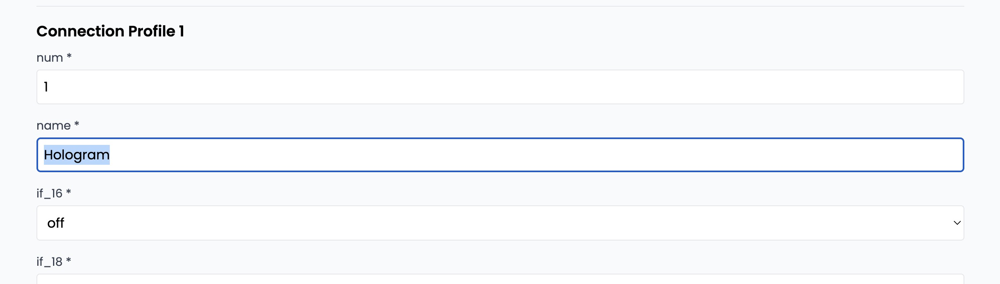
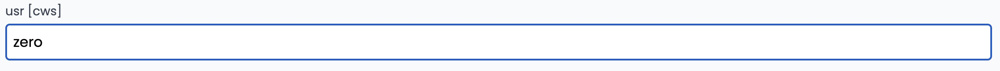
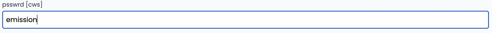
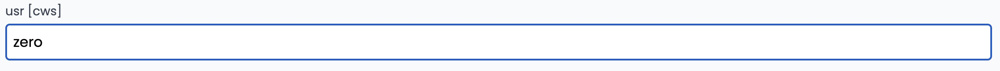
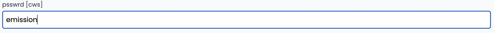
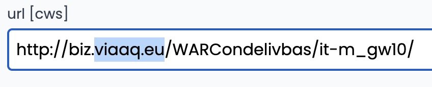
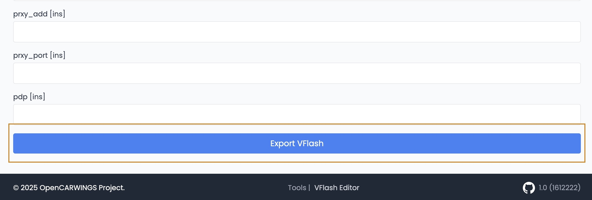

Guide to Bringing Your Navigator Back Online
(AZE0&ZE1 30/40kWh, ONLY ONE SD SLOT)
NOTE: This guide is for navigation units with ONLY ONE SD SLOT! If you have two, please follow the guide here
This detailed guide will walk you through the process of changing your navigator's APN settings. Follow each step carefully to ensure successful setup.
Step 1: Make a clone of your SD Card
You’ll need to make a clone of your navigation SD, so you will need new SD card that you will use in the navi. Keep the original safe in case something happens. Here’s how to proceed:
- 0: Get yourself an SD card with same or larger capacity to fit the original SD card clone image.
- 1: Use Win32 disk imager, HDD Raw Copy tool or other tool depending on your system to make a disk image of your original SD Card
- 2: Before writing the disk image, we need to fix its partition table. Use LeafSDTools companion.
- 3: Select the disk image inside LeafSDTools companion and wait for the fix to be applied.
- 4: Write fixed disk image to your new SD card and confirm it works with the navigation unit.

Step 2: Edit navigation unit settings
With the SD card plugged in to your computer, on one of the partitions you should find a file at path "PRIVATE/CWS/AP/CWS_SYS"
- 1. Copy the file from SD card somewhere else, for example into Desktop folder or Documents.
- 2. Navigate to https://opencarwings.viaaq.eu/navi in your browser
- 3. Select option "SD Card" and select the file CWS_SYS. You should see information be filled into fields and Connection Profile 1 appear. If not, please contact the developer

- 4. Start by naming your connection profile with your operator name.

- 5. Next, you will need to modify APN name: apn [cws]. Depending on your SIM provider, you may also need to modify APN user and password, usr [cws] and psswrd [cws].
 



- 6. Last but not least, server URL needs to be modified. Field "url [cws]". Standard URL should be "http://biz.nissan-gev.com/WARCondelivbas/it-m_gw10/". Modify it to be "http://biz.viaaq.eu/WARCondelivbas/it-m_gw10/"
ORIGINAL:

MODIFIED:

- 7. After all settings are modified, scroll to bottom and click export. New settings file will be downloaded.
Copy downloaded file on to the SD card (/PRIVATE/CWS/AP/CWS_SYS) (if asked to overwrite file, press yes)

NOTE: Make sure when you copy new settings file to SD card, it has exactly same file name and path as original!
Step 3: Try NissanConnect services
Final step is to try and see if any of data channels are accessible.
Congratulations! If all steps are completed successfully, your navigation unit should now be back online, restoring many functions like send location to car, telemetry data and more.